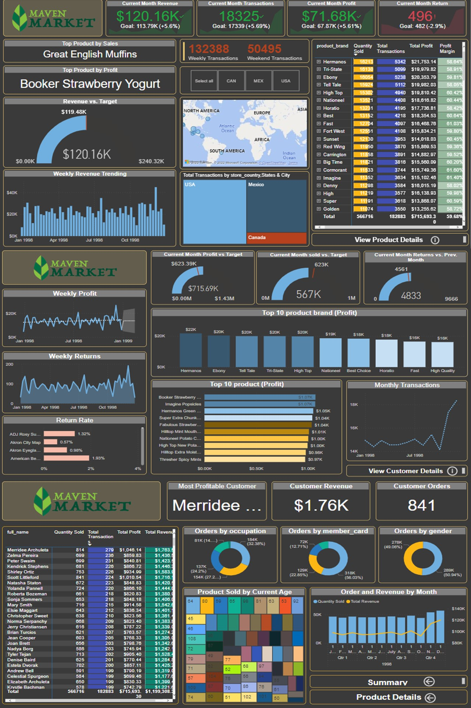

Maven Market Analysis

Project Overview
During the course of "Microsoft Power BI Desktop for Business Intelligence" certification, I was given the opportunity to participate in a bonus project known as "Maven Market Analysis" I've constructed this Dashboard 📊 utilizing "Maven Market" datasets, in an effort to gain insightful knowledge regarding.
Key Features
- Total Revenue: $817.9K
- Orders by Weekday and Business Hour
- Top Ingredients Used
Tools Used
Power BI
MSSQL
View on GitHub
View on PowerBI